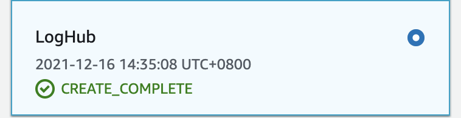
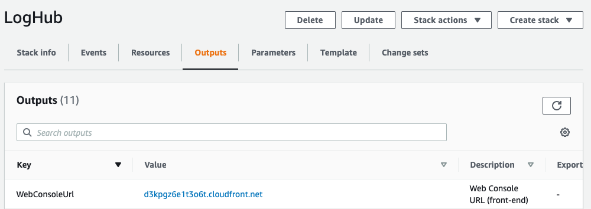
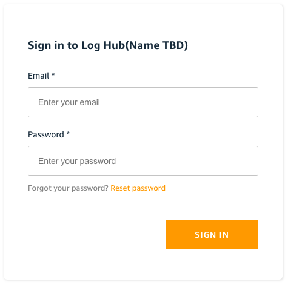
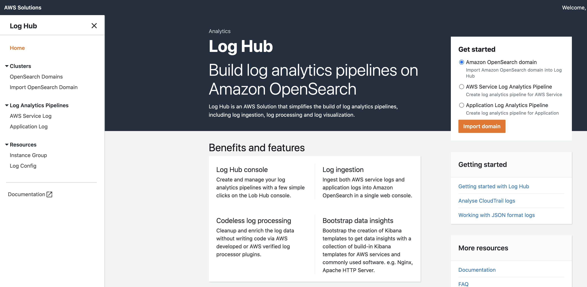

Deploy Log Hub
Estimated time: 15 minutes
Warning
Before following this section, please make sure we have one more vacancy to create new VPC, and two more vacancies to create EIP in your us-east-1 region. This cloudformation deployment will automatically create one VPC in your us-east-1 region and occupy two more EIP in total, so lack of VPC and EIP would cause deployment failure. Further more, five new S3 buckets will be created in total. So please also make sure your S3 bucket limit has not been reached.
Launch Stack
-
Log in the AWS Management Console and select the button below to launch the
LogHubAWS CloudFormation template.
-
We launch this template in US East (N. Virginia) Region, please check the region on the right-upper corner and make sure it's correct.
-
On the Create stack page, verify that the correct template URL shows in the Amazon S3 URL text box and choose Next.
-
On the Specify stack details page, leave the stack name as LogHub.
-
Under Parameters, enter the email, this email will be used as your username to login the dashboard.
-
Choose Next.
-
On the Configure stack options page, choose Next.
-
On the Review page, review and confirm the settings. Check the box acknowledging that the template creates AWS Identity and Access Management (IAM) resources.
-
Choose Create stack to deploy the stack.
You can view the status of the stack in the AWS CloudFormation console in the Status column. You should receive a CREATE_COMPLETE status in approximately 15 minutes. The successful deployment should look like this:

Access the Log Hub Web Console
This solution will generate a CloudFront endpoint that gives you access to the Log Hub console. The endpoint can be found in Outputs section of the CloudFormation template as WebConsoleUrl. An auto-generated password will be sent to your email address, you will need it to log in to the console. Please remember to omit the last digit . in your email.
-
Open the WebConsoleUrl in the browser. You will be navigated to a sign-in page. 
-
Input the email as the Username, and fill with the auto-generated password in the Password field.

-
Choose Sign in.
-
You will be asked to change your password for the first-time login. Follow the guide to change your password.
-
You will be asked to confirm your email address for password recovery. Skip it this time.
So far, we have successfully deployed the main stack of LogHub.
Now you can see the LogHub Web Console, please do not close it, we will do further steps on it later. 